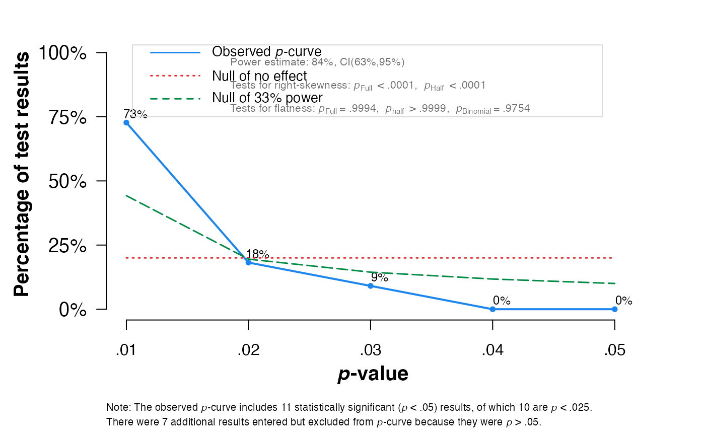
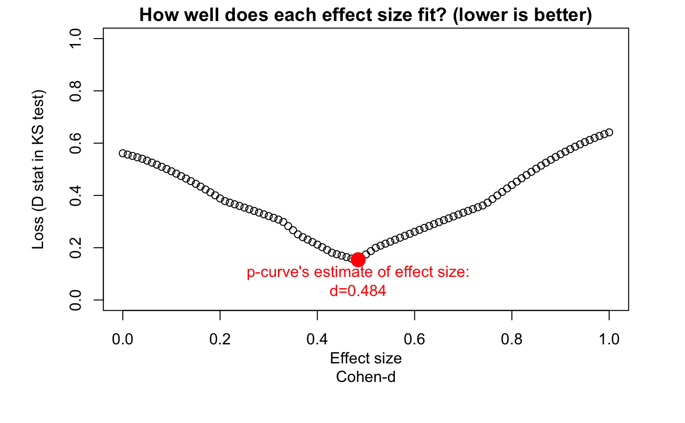
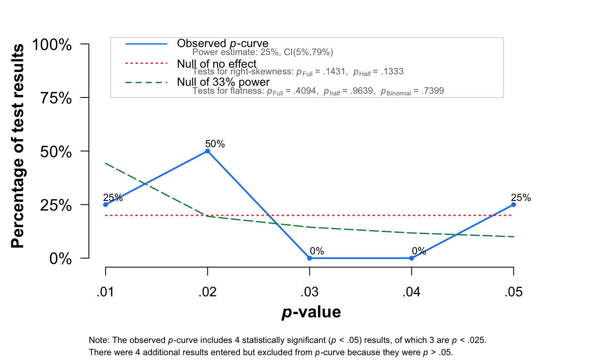
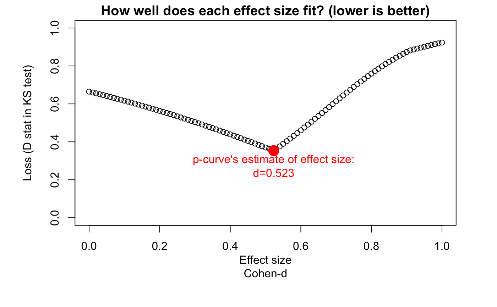
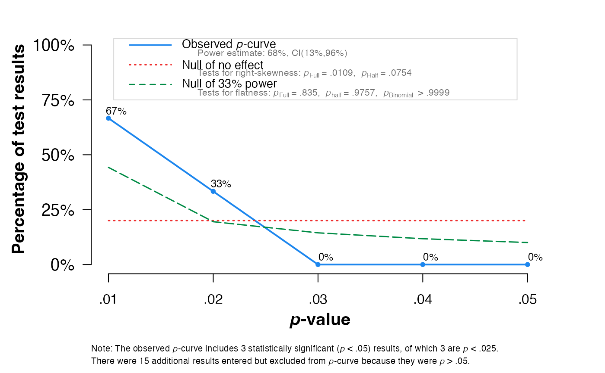

pcurve.RdThis function performs a \(p\)-curve analysis using a meta object or calculated effect size data.
pcurve(x, effect.estimation = FALSE, N, dmin = 0, dmax = 1)
| x | Either an object of class |
|---|---|
| effect.estimation | Logical. Should the true effect size underlying the p-curve be estimated?
If set to |
| N | A numeric vector of same length as the number of effect sizes included in |
| dmin | If |
| dmax | If |
Returns a plot and main results of the pcurve analysis:
P-curve plot: A plot displaying the observed \(p\)-curve and significance results for the right-skewness and flatness test.
Number of studies: The number of studies provided for the analysis, the number of significant \(p\)-values included in the analysis, and the number of studies with \(p<0.025\) used for the half-curve tests.
Test results: The results for the right-skewness and flatness test, including the \(p_{binomial}\) value, as well as the \(z\) and \(p\) value for the full and half-curve test.
Power Estimate: The power estimate and 95% confidence interval.
Evidential value: Two lines displaying if evidential value is present and/or absent/inadequate based on the results (using the guidelines by Simonsohn et al., 2015, see Details).
True effect estimate: If effect.estimation is set to TRUE, the estimated true effect
\(\hat{d}\) is returned additionally.
If results are saved to a variable, a list of class pcurve containing the following objects is returned:
pcurveResults: A data frame containing the results for the right-skewness and flatness test, including the
\(p_{binomial}\) value, as well as the \(z\) and \(p\) value for the full and half-curve test.
Power: The power estimate and 95% confidence interval.
PlotData: A data frame with the data used in the \(p\)-curve plot.
Input: A data frame containing the provided effect sizes, calculated \(p\)-values and individual results for each included (significant) effect.
EvidencePresent, EvidenceAbsent, kInput, kAnalyzed, kp0.25: Further results of the \(p\)-curve analysis, including the presence/absence of evidence interpretation,
and number of provided/significant/\(p<0.025\) studies.
I2: \(I^2\)-Heterogeneity of the studies provided as input (only when x is of class meta).
class.meta.object: class of the original object provided in x.
P-curve Analysis
\(P\)-curve analysis (Simonsohn, Simmons & Nelson, 2014, 2015) has been proposed as a method to detect \(p\)-hacking and publication bias in meta-analyses.
\(P\)-Curve assumes that publication bias is not only generated because researchers do not publish non-significant results, but also because analysts “play” around with their data ("\(p\)-hacking"; e.g., selectively removing outliers, choosing different outcomes, controlling for different variables) until a non-significant finding becomes significant (i.e., \(p<0.05\)).
The method assumes that for a specific research question, \(p\)-values smaller 0.05 of included studies should follow a right-skewed distribution if a true effect exists, even when the power in single studies was (relatively) low. Conversely, a left-skewed \(p\)-value distribution indicates the presence of \(p\)-hacking and absence of a true underlying effect. To control for "ambitious" \(p\)-hacking, \(P\)-curve also incorporates a "half-curve" test (Simonsohn, Simmons & Nelson, 2014, 2015).
Simonsohn et al. (2014) stress that \(p\)-curve analysis should only be used for test statistics which were actually of interest in the context of the included study, and that a detailed table documenting the reported results used in for the \(p\)-curve analysis should be created before communicating results (link).
Implementation in the function
To generate the \(p\)-curve and conduct the analysis, this function reuses parts of the R code underlying
the P-curve App 4.052 (Simonsohn, 2017). The effect sizes
included in the meta object or data.frame provided for x are transformed
into \(z\)-values internally, which are then used to calculate p-values and conduct the
Stouffer and Binomial test used for the \(p\)-curve analysis. Interpretations of the function
concerning the presence or absence/inadequateness of evidential value are made according to the
guidelines described by Simonsohn, Simmons and Nelson (2015):
Evidential value present: The right-skewness test is significant for the half curve with \(p<0.05\) or the \(p\)-value of the right-skewness test is \(<0.1\) for both the half and full curve.
Evidential value absent or inadequate: The flatness test is \(p<0.05\) for the full curve or the flatness test for the half curve and the binomial test are \(p<0.1\).
For effect size estimation, the pcurve function implements parts of the loss function
presented in Simonsohn, Simmons and Nelson (2014b).
The function generates a loss function for candidate effect sizes \(\hat{d}\), using \(D\)-values in
a Kolmogorov-Smirnov test as the metric of fit, and the value of \(\hat{d}\) which minimizes \(D\)
as the estimated true effect.
It is of note that a lack of robustness of \(p\)-curve analysis results
has been noted for meta-analyses with substantial heterogeneity (van Aert, Wicherts, & van Assen, 2016).
Following van Aert et al., adjusted effect size estimates should only be
reported and interpreted for analyses with \(I^2\) values below 50 percent.
A warning message is therefore printed by
the pcurve function when x is of class meta and the between-study heterogeneity
of the meta-analysis is substantial (i.e., \(I^2\) greater than 50 percent).
Harrer, M., Cuijpers, P., Furukawa, T.A, & Ebert, D. D. (2019). Doing Meta-Analysis in R: A Hands-on Guide. DOI: 10.5281/zenodo.2551803. Chapter 9.2.
Simonsohn, U., Nelson, L. D., & Simmons, J. P. (2014a). P-curve: a Key to the File-drawer. Journal of Experimental Psychology, 143(2), 534.
Simonsohn, U., Nelson, L. D. & Simmons, J. P. (2014b). P-Curve and Effect Size: Correcting for Publication Bias Using Only Significant Results. Perspectives on Psychological Science 9(6), 666–81.
Simonsohn, U., Nelson, L. D. & Simmons, J. P. (2015). Better P-Curves: Making P-Curve Analysis More Robust to Errors, Fraud, and Ambitious P-Hacking, a Reply to Ulrich and Miller (2015). Journal of Experimental Psychology, 144(6), 1146-1152.
Simonsohn, U. (2017). R code for the P-Curve App 4.052. http://p-curve.com/app4/pcurve_app4.052.r (Accessed 2019-08-16).
Van Aert, R. C., Wicherts, J. M., & van Assen, M. A. (2016). Conducting meta-analyses based on p values: Reservations and recommendations for applying p-uniform and p-curve. Perspectives on Psychological Science, 11(5), 713-729.
# Example 1: Use metagen object, do not estimate d suppressPackageStartupMessages(library(meta)) data("ThirdWave") meta1 = metagen(TE,seTE, studlab=ThirdWave$Author, data=ThirdWave) pcurve(meta1)#>#> P-curve analysis #> ----------------------- #> - Total number of provided studies: k = 18 #> - Total number of p<0.05 studies included into the analysis: k = 11 (61.11%) #> - Total number of studies with p<0.025: k = 10 (55.56%) #> #> Results #> ----------------------- #> pBinomial zFull pFull zHalf pHalf #> Right-skewness test 0.006 -5.943 0.000 -4.982 0 #> Flatness test 0.975 3.260 0.999 5.158 1 #> Note: p-values of 0 or 1 correspond to p<0.001 and p>0.999, respectively. #> Power Estimate: 84% (62.7%-94.6%) #> #> Evidential value #> ----------------------- #> - Evidential value present: yes #> - Evidential value absent/inadequate: no# Example 2: Provide Ns, calculate d estimate N = c(105, 161, 60, 37, 141, 82, 97, 61, 200, 79, 124, 25, 166, 59, 201, 95, 166, 144) pcurve(meta1, effect.estimation = TRUE, N = N)#>#> P-curve analysis #> ----------------------- #> - Total number of provided studies: k = 18 #> - Total number of p<0.05 studies included into the analysis: k = 11 (61.11%) #> - Total number of studies with p<0.025: k = 10 (55.56%) #> #> Results #> ----------------------- #> pBinomial zFull pFull zHalf pHalf #> Right-skewness test 0.006 -5.943 0.000 -4.982 0 #> Flatness test 0.975 3.260 0.999 5.158 1 #> Note: p-values of 0 or 1 correspond to p<0.001 and p>0.999, respectively. #> Power Estimate: 84% (62.7%-94.6%) #> #> Evidential value #> ----------------------- #> - Evidential value present: yes #> - Evidential value absent/inadequate: no #> #> P-curve's estimate of the true effect size: d=0.484 #> #> Warning: I-squared of the meta-analysis is >= 50%, so effect size estimates are not trustworthy.# Example 3: Use metacont object, calculate d estimate data("amlodipine") meta2 <- metacont(n.amlo, mean.amlo, sqrt(var.amlo), n.plac, mean.plac, sqrt(var.plac), data=amlodipine, studlab=study, sm="SMD") N = amlodipine$n.amlo + amlodipine$n.plac pcurve(meta2, effect.estimation = TRUE, N = N, dmin = 0, dmax = 1)#>#> P-curve analysis #> ----------------------- #> - Total number of provided studies: k = 8 #> - Total number of p<0.05 studies included into the analysis: k = 4 (50%) #> - Total number of studies with p<0.025: k = 3 (37.5%) #> #> Results #> ----------------------- #> pBinomial zFull pFull zHalf pHalf #> Right-skewness test 0.312 -1.067 0.143 -1.111 0.133 #> Flatness test 0.740 -0.229 0.409 1.798 0.964 #> Note: p-values of 0 or 1 correspond to p<0.001 and p>0.999, respectively. #> Power Estimate: 25% (5%-79.1%) #> #> Evidential value #> ----------------------- #> - Evidential value present: no #> - Evidential value absent/inadequate: no #> #> P-curve's estimate of the true effect size: d=0.523# Example 4: Construct x object from scratch sim = data.frame("studlab" = c(paste("Study_", 1:18, sep = "")), "TE" = c(0.561, 0.296, 0.648, 0.362, 0.770, 0.214, 0.476, 0.459, 0.343, 0.804, 0.357, 0.476, 0.638, 0.396, 0.497, 0.384, 0.568, 0.415), "seTE" = c(0.338, 0.297, 0.264, 0.258, 0.279, 0.347, 0.271, 0.319, 0.232, 0.237, 0.385, 0.398, 0.342, 0.351, 0.296, 0.325, 0.322, 0.225)) pcurve(sim)#>#> P-curve analysis #> ----------------------- #> - Total number of provided studies: k = 18 #> - Total number of p<0.05 studies included into the analysis: k = 3 (16.67%) #> - Total number of studies with p<0.025: k = 3 (16.67%) #> #> Results #> ----------------------- #> pBinomial zFull pFull zHalf pHalf #> Right-skewness test 0.125 -2.295 0.011 -1.437 0.075 #> Flatness test 1.000 0.974 0.835 1.971 0.976 #> Note: p-values of 0 or 1 correspond to p<0.001 and p>0.999, respectively. #> Power Estimate: 68% (13%-95.5%) #> #> Evidential value #> ----------------------- #> - Evidential value present: yes #> - Evidential value absent/inadequate: no